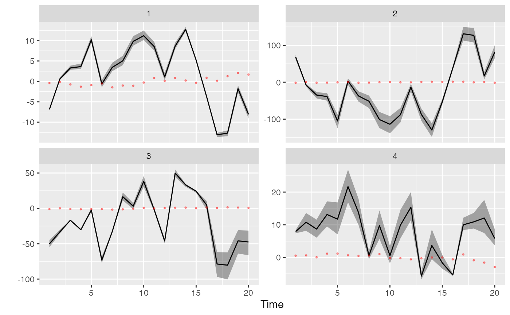
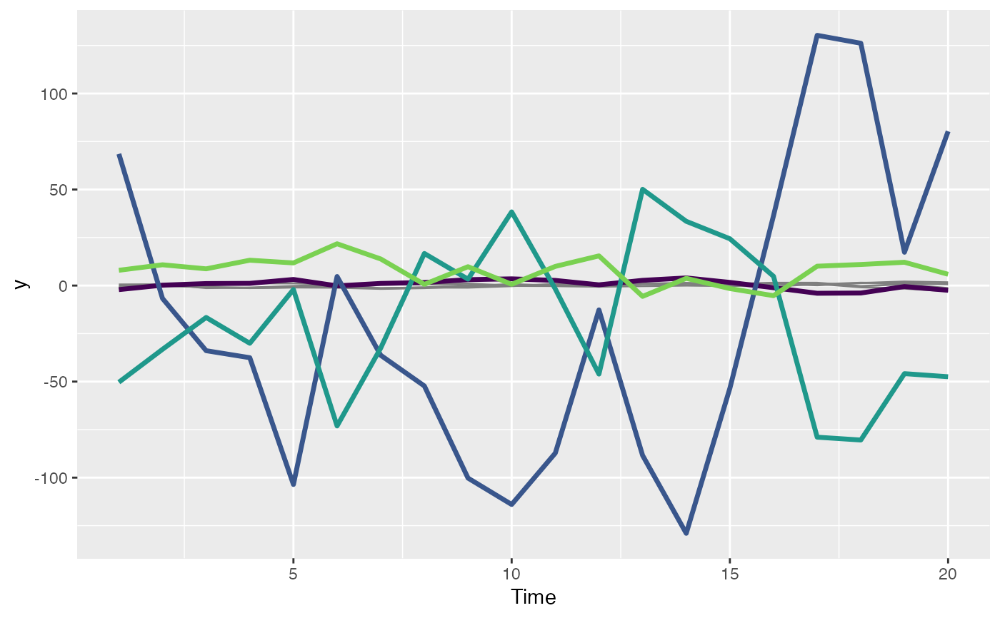

Plot the fitted values from a DFA
plot_fitted(modelfit, conf_level = 0.95, names = NULL, spaghetti = FALSE)
| modelfit | Output from |
|---|---|
| conf_level | Probability level for CI. |
| names | Optional vector of names for plotting labels TODO. Should be same length as the number of time series |
| spaghetti | Defaults to FALSE, but if TRUE puts all raw time series (grey) and fitted values on a single plot |
plot_loadings fit_dfa rotate_trends dfa_fitted
# \donttest{ y <- sim_dfa(num_trends = 2, num_years = 20, num_ts = 4) m <- fit_dfa(y = y$y_sim, num_trends = 2, iter = 50, chains = 1)#> #> SAMPLING FOR MODEL 'dfa' NOW (CHAIN 1). #> Chain 1: #> Chain 1: Gradient evaluation took 5.8e-05 seconds #> Chain 1: 1000 transitions using 10 leapfrog steps per transition would take 0.58 seconds. #> Chain 1: Adjust your expectations accordingly! #> Chain 1: #> Chain 1: #> Chain 1: WARNING: There aren't enough warmup iterations to fit the #> Chain 1: three stages of adaptation as currently configured. #> Chain 1: Reducing each adaptation stage to 15%/75%/10% of #> Chain 1: the given number of warmup iterations: #> Chain 1: init_buffer = 3 #> Chain 1: adapt_window = 20 #> Chain 1: term_buffer = 2 #> Chain 1: #> Chain 1: Iteration: 1 / 50 [ 2%] (Warmup) #> Chain 1: Iteration: 5 / 50 [ 10%] (Warmup) #> Chain 1: Iteration: 10 / 50 [ 20%] (Warmup) #> Chain 1: Iteration: 15 / 50 [ 30%] (Warmup) #> Chain 1: Iteration: 20 / 50 [ 40%] (Warmup) #> Chain 1: Iteration: 25 / 50 [ 50%] (Warmup) #> Chain 1: Iteration: 26 / 50 [ 52%] (Sampling) #> Chain 1: Iteration: 30 / 50 [ 60%] (Sampling) #> Chain 1: Iteration: 35 / 50 [ 70%] (Sampling) #> Chain 1: Iteration: 40 / 50 [ 80%] (Sampling) #> Chain 1: Iteration: 45 / 50 [ 90%] (Sampling) #> Chain 1: Iteration: 50 / 50 [100%] (Sampling) #> Chain 1: #> Chain 1: Elapsed Time: 0.010453 seconds (Warm-up) #> Chain 1: 0.014268 seconds (Sampling) #> Chain 1: 0.024721 seconds (Total) #> Chain 1:#> Warning: There were 1 chains where the estimated Bayesian Fraction of Missing Information was low. See #> http://mc-stan.org/misc/warnings.html#bfmi-low#> Warning: Examine the pairs() plot to diagnose sampling problems#> Warning: The largest R-hat is NA, indicating chains have not mixed. #> Running the chains for more iterations may help. See #> http://mc-stan.org/misc/warnings.html#r-hat#> Warning: Bulk Effective Samples Size (ESS) is too low, indicating posterior means and medians may be unreliable. #> Running the chains for more iterations may help. See #> http://mc-stan.org/misc/warnings.html#bulk-ess#> Warning: Tail Effective Samples Size (ESS) is too low, indicating posterior variances and tail quantiles may be unreliable. #> Running the chains for more iterations may help. See #> http://mc-stan.org/misc/warnings.html#tail-ess#> Inference for the input samples (1 chains: each with iter = 25; warmup = 12): #> #> Q5 Q50 Q95 Mean SD Rhat Bulk_ESS Tail_ESS #> x[1,1] -2.6 -2.6 -2.6 -2.6 0.0 1.58 7 13 #> x[2,1] -0.1 -0.1 -0.1 -0.1 0.0 2.06 4 13 #> x[1,2] 0.1 0.2 0.2 0.2 0.0 2.06 3 13 #> x[2,2] -0.6 -0.6 -0.6 -0.6 0.0 2.06 3 13 #> x[1,3] 1.1 1.2 1.2 1.1 0.0 2.06 3 13 #> x[2,3] -0.6 -0.6 -0.6 -0.6 0.0 2.06 3 13 #> x[1,4] 1.1 1.3 1.3 1.2 0.1 2.06 3 13 #> x[2,4] -0.8 -0.8 -0.8 -0.8 0.0 2.06 3 13 #> x[1,5] 3.6 3.7 3.7 3.7 0.1 2.06 3 13 #> x[2,5] -1.1 -1.1 -1.0 -1.0 0.0 2.06 3 13 #> x[1,6] -0.5 -0.4 -0.4 -0.4 0.1 2.06 3 13 #> x[2,6] -1.1 -1.1 -1.1 -1.1 0.0 2.06 3 13 #> x[1,7] 0.9 1.1 1.2 1.1 0.1 2.06 3 13 #> x[2,7] -0.9 -0.9 -0.8 -0.8 0.0 2.06 3 13 #> x[1,8] 1.5 1.7 1.8 1.6 0.1 2.06 3 13 #> x[2,8] -0.2 -0.2 -0.2 -0.2 0.0 2.06 3 13 #> x[1,9] 3.3 3.5 3.5 3.4 0.1 2.06 3 13 #> x[2,9] -0.9 -0.9 -0.9 -0.9 0.0 2.06 3 13 #> x[1,10] 3.8 4.0 4.1 4.0 0.1 2.06 3 13 #> x[2,10] -0.5 -0.5 -0.5 -0.5 0.0 2.06 4 13 #> x[1,11] 2.8 3.0 3.1 3.0 0.1 2.06 3 13 #> x[2,11] -0.9 -0.9 -0.8 -0.9 0.0 2.06 3 13 #> x[1,12] 0.1 0.3 0.3 0.2 0.1 2.06 3 13 #> x[2,12] -0.8 -0.8 -0.8 -0.8 0.0 2.06 3 13 #> x[1,13] 3.0 3.1 3.2 3.1 0.1 2.06 4 13 #> x[2,13] 0.0 0.0 0.0 0.0 0.0 2.06 3 13 #> x[1,14] 4.6 4.7 4.7 4.7 0.1 2.06 4 13 #> x[2,14] -0.7 -0.7 -0.7 -0.7 0.0 2.06 3 13 #> x[1,15] 1.9 1.9 1.9 1.9 0.0 1.87 4 13 #> x[2,15] -0.1 -0.1 -0.1 -0.1 0.0 2.06 4 13 #> x[1,16] -1.4 -1.4 -1.3 -1.4 0.0 2.06 3 13 #> x[2,16] 0.5 0.5 0.5 0.5 0.0 2.06 4 13 #> x[1,17] -4.9 -4.8 -4.7 -4.8 0.1 2.06 3 13 #> x[2,17] 0.1 0.1 0.1 0.1 0.0 2.06 4 13 #> x[1,18] -4.7 -4.6 -4.5 -4.6 0.1 2.06 3 13 #> x[2,18] 0.0 0.0 0.1 0.1 0.0 2.06 3 13 #> x[1,19] -0.6 -0.5 -0.4 -0.5 0.1 2.06 3 13 #> x[2,19] -0.5 -0.5 -0.5 -0.5 0.0 2.06 3 13 #> x[1,20] -2.9 -2.9 -2.7 -2.8 0.1 2.06 3 13 #> x[2,20] 0.1 0.1 0.2 0.1 0.0 2.06 3 13 #> Z[1,1] 2.7 2.7 2.7 2.7 0.0 1.45 5 13 #> Z[2,1] -26.1 -25.8 -23.9 -25.2 1.0 2.06 3 13 #> Z[3,1] 14.9 16.2 16.4 15.8 0.6 2.06 3 13 #> Z[4,1] -2.3 -2.2 -2.2 -2.2 0.0 1.00 8 13 #> Z[1,2] 0.0 0.0 0.0 0.0 0.0 1.00 13 13 #> Z[2,2] 2.5 2.5 2.5 2.5 0.0 1.87 6 13 #> Z[3,2] 56.2 59.8 60.6 58.7 1.9 2.06 3 13 #> Z[4,2] -17.7 -17.2 -14.7 -16.5 1.3 2.06 3 13 #> log_lik[1] -5.5 -5.3 -4.4 -5.0 0.5 2.06 3 13 #> log_lik[2] -420.3 -378.9 -225.0 -332.7 82.8 2.06 3 13 #> log_lik[3] -206.9 -185.6 -107.6 -162.6 41.9 2.06 3 13 #> log_lik[4] -6.5 -5.9 -4.6 -5.6 0.8 2.06 3 13 #> log_lik[5] -2.0 -1.9 -1.8 -1.9 0.1 2.06 3 13 #> log_lik[6] -6.2 -5.4 -3.6 -5.0 1.1 2.06 3 13 #> log_lik[7] -96.7 -87.2 -53.3 -77.1 18.4 2.06 3 13 #> log_lik[8] -9.6 -8.6 -5.2 -7.6 1.9 2.06 3 13 #> log_lik[9] -3.1 -3.0 -2.7 -2.9 0.2 2.06 3 13 #> log_lik[10] -85.1 -74.2 -38.4 -63.9 19.7 2.06 3 13 #> log_lik[11] -24.2 -22.3 -15.6 -20.2 3.7 2.06 3 13 #> log_lik[12] -7.2 -6.5 -4.0 -5.8 1.4 2.06 3 13 #> log_lik[13] -3.7 -3.6 -3.1 -3.4 0.3 2.06 3 13 #> log_lik[14] -105.8 -92.4 -46.7 -79.0 24.9 2.06 3 13 #> log_lik[15] -75.7 -68.6 -44.9 -61.5 13.1 2.06 3 13 #> log_lik[16] -12.3 -10.9 -5.8 -9.5 2.7 2.06 3 13 #> log_lik[17] -12.1 -11.2 -8.0 -10.3 1.7 2.06 3 13 #> log_lik[18] -874.5 -775.9 -422.4 -671.5 191.5 2.06 3 13 #> log_lik[19] -2.9 -2.2 -2.1 -2.4 0.3 2.06 4 13 #> log_lik[20] -9.2 -8.2 -3.9 -6.9 2.3 2.06 3 13 #> log_lik[21] -2.1 -1.9 -1.8 -1.9 0.1 2.06 3 13 #> log_lik[22] -7.5 -5.3 -4.9 -6.0 1.2 2.06 4 13 #> log_lik[23] -449.8 -404.2 -249.8 -359.0 84.2 2.06 3 13 #> log_lik[24] -35.8 -31.3 -16.6 -27.2 8.1 2.06 3 13 #> log_lik[25] -3.6 -3.5 -2.9 -3.3 0.3 2.06 3 13 #> log_lik[26] -87.6 -74.8 -31.7 -62.1 23.9 2.06 3 13 #> log_lik[27] -88.2 -79.8 -53.5 -72.2 14.5 2.06 3 13 #> log_lik[28] -14.8 -13.0 -7.0 -11.3 3.3 2.06 3 13 #> log_lik[29] -4.6 -4.4 -3.4 -4.1 0.5 2.06 3 13 #> log_lik[30] -182.7 -157.2 -70.5 -131.7 47.9 2.06 3 13 #> log_lik[31] -24.7 -21.8 -11.0 -18.6 5.8 2.06 3 13 #> log_lik[32] -2.1 -1.9 -1.8 -1.9 0.1 2.06 3 13 #> log_lik[33] -11.4 -10.6 -7.4 -9.6 1.7 2.06 3 13 #> log_lik[34] -794.3 -702.8 -362.9 -601.5 183.9 2.06 3 13 #> log_lik[35] -2.3 -2.2 -2.0 -2.2 0.1 2.06 4 13 #> log_lik[36] -6.6 -5.9 -3.2 -5.1 1.5 2.06 3 13 #> log_lik[37] -12.5 -11.6 -8.0 -10.6 1.9 2.06 3 13 #> log_lik[38] -1019.5 -904.0 -474.0 -776.1 232.2 2.06 3 13 #> log_lik[39] -112.4 -100.5 -51.5 -86.1 25.8 2.06 3 13 #> log_lik[40] -2.2 -1.8 -1.8 -1.9 0.2 2.06 3 13 #> log_lik[41] -6.5 -6.1 -4.5 -5.6 0.8 2.06 3 13 #> log_lik[42] -592.4 -525.5 -269.8 -448.6 137.9 2.06 3 13 #> log_lik[43] -3.1 -2.4 -2.3 -2.6 0.3 2.06 4 13 #> log_lik[44] -8.5 -7.6 -4.0 -6.6 1.9 2.06 3 13 #> log_lik[45] -2.0 -1.9 -1.8 -1.9 0.1 2.06 3 13 #> log_lik[46] -9.7 -8.1 -2.9 -6.6 3.0 2.06 3 13 #> log_lik[47] -187.2 -167.8 -105.9 -149.9 34.2 2.06 3 13 #> log_lik[48] -20.6 -18.1 -9.9 -15.8 4.5 2.06 3 13 #> log_lik[49] -6.8 -6.4 -4.8 -5.9 0.8 2.06 3 13 #> log_lik[50] -614.6 -545.7 -290.2 -469.9 138.2 2.06 3 13 #> log_lik[51] -203.4 -183.0 -106.4 -160.8 40.7 2.06 3 13 #> log_lik[52] -5.0 -4.7 -4.3 -4.6 0.2 1.58 4 13 #> log_lik[53] -15.1 -14.1 -10.1 -12.9 2.2 2.06 3 13 #> log_lik[54] -1400.8 -1253.6 -707.1 -1090.9 295.0 2.06 3 13 #> log_lik[55] -93.0 -84.6 -50.4 -74.8 17.8 2.06 3 13 #> log_lik[56] -2.2 -2.2 -2.0 -2.1 0.1 2.06 4 13 #> log_lik[57] -4.4 -4.3 -3.6 -4.1 0.3 2.06 3 13 #> log_lik[58] -233.8 -210.2 -119.4 -183.0 49.2 2.06 3 13 #> log_lik[59] -56.3 -51.9 -36.0 -47.4 8.4 2.06 3 13 #> log_lik[60] -2.7 -2.3 -2.3 -2.5 0.2 2.06 4 13 #> log_lik[61] -3.6 -3.5 -3.1 -3.4 0.2 2.06 3 13 #> log_lik[62] -116.2 -102.1 -58.2 -89.6 23.8 2.06 3 13 #> log_lik[63] -6.8 -5.0 -4.5 -5.5 1.0 2.06 4 13 #> log_lik[64] -3.9 -3.8 -3.1 -3.6 0.4 2.06 3 13 #> log_lik[65] -16.9 -15.6 -11.1 -14.3 2.4 2.06 3 13 #> log_lik[66] -1393.8 -1235.4 -692.4 -1076.4 293.6 2.06 3 13 #> log_lik[67] -492.4 -430.4 -218.4 -369.3 115.2 2.06 3 13 #> log_lik[68] -8.1 -6.9 -5.1 -6.6 1.2 2.06 3 13 #> log_lik[69] -18.4 -16.9 -11.8 -15.4 2.7 2.06 3 13 #> log_lik[70] -1325.1 -1169.1 -648.1 -1016.9 283.2 2.06 3 13 #> log_lik[71] -516.7 -449.7 -226.7 -385.5 122.0 2.06 3 13 #> log_lik[72] -12.4 -10.7 -7.3 -9.8 2.1 2.06 3 13 #> log_lik[73] -2.9 -2.8 -2.5 -2.7 0.2 2.06 3 13 #> log_lik[74] -17.6 -13.6 -4.6 -11.2 5.2 2.06 3 13 #> log_lik[75] -157.6 -133.4 -58.9 -112.0 41.7 2.06 3 13 #> log_lik[76] -14.6 -12.6 -6.6 -10.9 3.4 2.06 3 13 #> log_lik[77] -9.7 -8.9 -6.4 -8.2 1.4 2.06 3 13 #> log_lik[78] -539.5 -471.6 -245.9 -405.8 123.0 2.06 3 13 #> log_lik[79] -164.8 -139.7 -59.2 -116.6 44.6 2.06 3 13 #> log_lik[80] -7.3 -6.4 -4.5 -5.9 1.1 2.06 3 13 #> psi[1] 4.5 4.5 4.5 4.5 0.0 2.06 4 13 #> psi[2] 0.2 0.2 0.2 0.2 0.0 1.87 4 13 #> xstar[1,1] -5.4 -5.0 -2.7 -4.6 1.0 1.30 5 13 #> xstar[2,1] 1.1 2.0 3.8 2.2 0.9 1.87 13 13 #> sigma[1] 2.4 2.5 3.0 2.6 0.3 2.06 3 13 #> lp__ -15656.7 -14104.7 -8511.2 -12454.1 3021.5 2.06 3 13 #> #> For each parameter, Bulk_ESS and Tail_ESS are crude measures of #> effective sample size for bulk and tail quantities respectively (an ESS > 100 #> per chain is considered good), and Rhat is the potential scale reduction #> factor on rank normalized split chains (at convergence, Rhat <= 1.05).# }